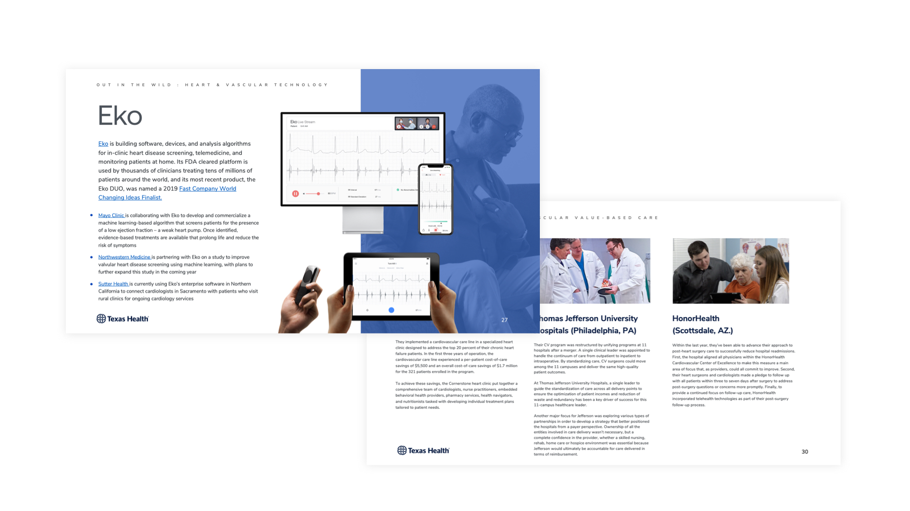

Patient Referral Navigation
Texas Health was losing ~$4M annually as physicians referred patients outside the THPG network. I led 43 interviews and 17 observations across primary care physicians, navigators, and specialists — then synthesized findings into a journey map and five directional concepts that became the foundation for leadership's reform roadmap.
Heart & Vascular Research
In a crowded DFW Heart & Vascular market, Texas Health wasn't being chosen by patients — they were being assigned. I led patient and physician research, plus a market scan of leading programs, to uncover where new services could differentiate the experience.
Studying the leading edge
Beyond stakeholder interviews, I led a comparative analysis of 15+ innovations and 10+ leading programs in heart & vascular care — from FDA-cleared platforms like Eko to value-based care models at Thomas Jefferson University Hospitals and HonorHealth. These benchmarks gave Texas Health a sharp picture of where their program could differentiate.

Personal Relationships Matter
Patients who described the best experiences consistently pointed to feeling a personal connection with their care team — not just clinical competence.
Volume = Expertise
Patients believe the more procedures a facility performs, the more skilled the physicians become. Surfacing that signal builds patient trust.
Location, Location, Location
Patients with great Texas Health experiences will drive any distance to keep that relationship. Proximity matters less than perceived quality of care.